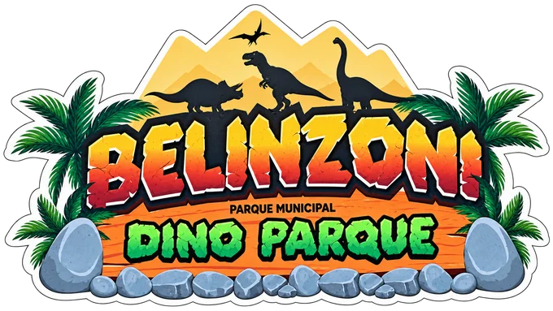
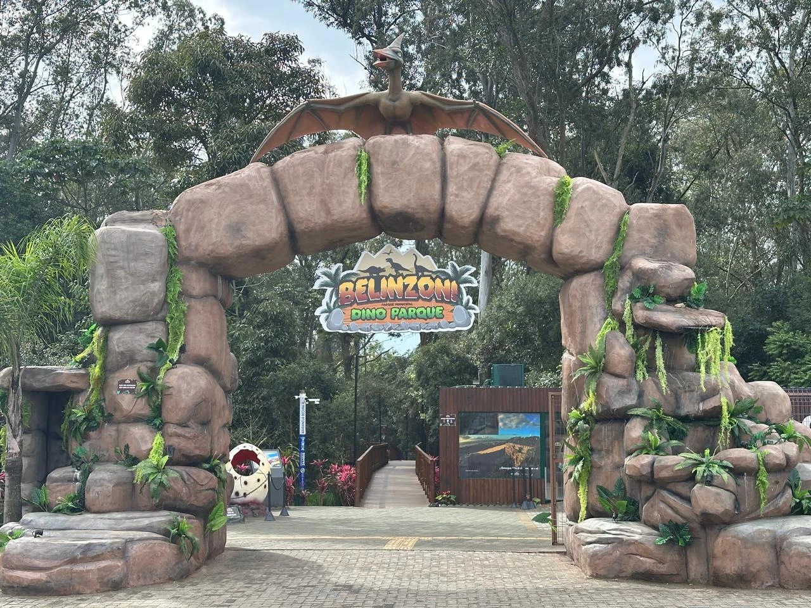

Uma aventura em meio à vegetação nativa de Araranguá, com réplicas animatrônicas, passarelas de madeira e a lenda da Cobra da Itoupaba.
O catálogo reúne os 8 dinossauros identificados no inventário municipal e as 13 espécies pré-históricas da expedição. Publicações posteriores citam uma réplica adicional sem identificar sua espécie. O inventário completo e a distribuição do parque aguardam validação da administração.
O mapa é ilustrativo, com posições demonstrativas. A identificação visual compara as imagens da câmera com as fotos fornecidas e precisa ser validada no local. QR e seleção de espécie também estão disponíveis.
Os dinossauros e criaturas contam com modelos 3D animados nas fases filhote e adulto. O tamanho em metros vale no modo AR com rastreamento de chão; no modo de composição o enquadramento é aproximado.
A câmera é processada no aparelho. As fotos ficam neste navegador até você baixar, compartilhar ou apagar. A disponibilidade de AR depende do aparelho e navegador.